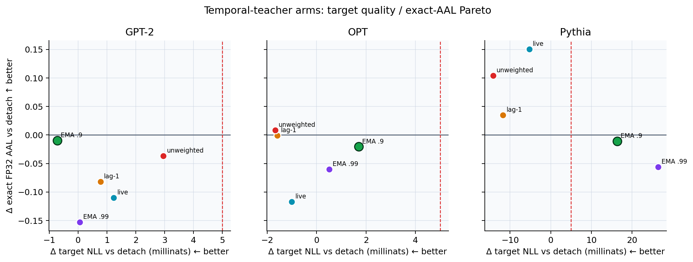
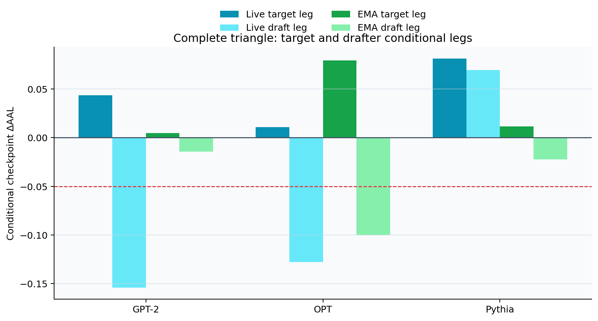
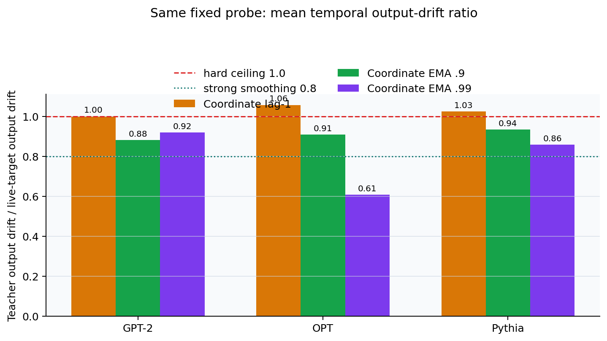

Pythia +0.0164 > +.005 margin
Temporal-Teacher Coordinate ARR v0.3: moving-target 완화는 부분 성공, joint method는 KILL¶
ENGINEERING KILL
EMA .9는 GPT·OPT의 나쁜 draft leg를 줄였지만 없애지 못했다. Pythia target NLL과 전체 exact AAL까지 동시에 지키지 못해 selection seeds 6–8은 계속 봉인한다.
-0.010 / -0.021 / -0.011
+0.005 / +0.079 / +0.011
-0.014 / -0.100 / -0.022
0.88 / 0.91 / 0.94; gate ≤ .80
판정: Stage 0 identity PASS · GPT/OPT draft-leg repair PASS · complete Stage 1 engineering KILL
범위: engineering seed
99, 세 independent pretrained AR target/drafter pair, 100-step rank-8 LoRA adaptation. Selection seeds6–8은 계속 sealed다.
- 0. 한 화면 결론
- 1. 설정과 문헌상의 위치
- 2. 목적함수와 정확한 update timeline
- 3. 사전 고정 설계
- 4. Identity와 implementation audit
- 5. Primary endpoint
- 6. Complete cross-swap: target leg는 남고 draft leg가 실패했다
- 7. Mechanism과 비용
- 8. Frozen gate ledger와 판정
- 9. 무엇을 배웠고, 무엇을 아직 말할 수 없는가
- 10. v0.4 제안: online same-state draft-update selector/consensus
- 11. 추론 한계와 artifact provenance
0. 한 화면 결론¶
Coordinate-only ARR v0.2에서는 target checkpoint의 조건부 AAL 기여는 세 pair 모두
양수였지만, live target을 계속 추종한 draft checkpoint가 GPT-2와 OPT에서 크게
나빴다. v0.3은 target loss를 그대로 두고 drafter가 보는 teacher만 target parameter의
EMA(mu=.9)로 바꿨다.
결과는 부분 repair이지만 main-method 실패다.
- EMA
.9의target NLL − detach는 GPT-2/OPT/Pythia에서−.000719 / +.001712 / +.016387이었다. Pythia가 frozen+.005margin을 넘었다. - FP32 eager exact
AAL − detach는−.009536 / −.020501 / −.010823이었다. 세 값 모두 사전 floor−.05안이지만, nonnegative pair가0/3이라 gate를 통과하지 못했다. - Cross-swap에서 EMA target leg는
+.004625 / +.079471 / +.011363으로3/3양수였다. 그러나 EMA draft leg는−.014161 / −.099972 / −.022186으로0/3양수였다. - EMA는 기존 live draft leg를 GPT-2에서
+.139781, OPT에서+.027650만큼 회복했지만 부호를 바꾸지 못했다. Pythia에서는 기존의 양의 draft co-adaptation+.069351을−.022186으로 바꿨다.
따라서 이번 패널이 지지하는 결론은 좁고 명확하다.
빠르게 움직이는 target teacher를 시간적으로 평활화하면 GPT/OPT의 drafter harm를 줄일 수 있다. 하지만 negative draft co-adaptation의 충분한 해결책은 아니며, 하나의 고정 EMA 시간척도는 Pythia의 유익한 co-adaptation까지 제거할 수 있다.

1. 설정과 문헌상의 위치¶
Target distribution을 p_theta, 독립 drafter를 q_phi라 한다. 두 모델은
tokenizer-compatible token ID만 공유한다. Backbone, embedding, hidden state, LM head,
LoRA parameter와 optimizer는 모두 분리돼 있다. MEDUSA, EAGLE, native draft head와
shared representation은 범위 밖이다.
| Reference | 이 패널이 가져온 부분 | 이 논문들이 제공하지 않는 것 |
|---|---|---|
| Mean Teacher, NeurIPS 2017 | 연속 student weight의 EMA를 frozen teacher로 쓰는 시간 평활화 원리 | independent AR speculative pair의 AAL 또는 joint target 보호 근거 |
| Online Speculative Decoding, ICML 2024 | query distribution에서 target-aware draft를 계속 적응시키는 문제 설정 | target LM까지 draft-aware하게 공동 학습하는 방법 |
| LK Losses | KL proxy 대신 acceptance를 직접 겨냥하는 draft objective; 여기서는 frozen HybridLK, eta=3, gamma=1 |
temporal teacher나 target-side bidirectional auxiliary |
| Draft-OPD | draft-induced state와 rejection feedback을 학습에 반영해야 한다는 on-policy 관점 | 본 패널의 별도 pretrained target/drafter joint update에 대한 검증 |
즉 EMA는 Mean Teacher에서 빌린 가설적 안정화 장치이지, 위 문헌이 이 joint setting의 효과를 보장한다는 뜻이 아니다. Online Speculative Decoding과 Draft-OPD도 주로 drafter 적응을 다룬다. 본 연구의 빈틈은 별도 pretrained target도 draft-aware하게 움직일 때 target 보호와 speculative utility를 동시에 확보하는 문제다.
2. 목적함수와 정확한 update timeline¶
Step t 시작의 live target과 drafter를 각각 theta_(t-1), phi_(t-1)라 한다.
Target은 v0.2와 동일한 weighted proposal-coordinate objective를 쓴다.
\[
L^T_t=L_{CE}(\theta_{t-1})+
\frac{\beta}{BK}\sum_{i,k}S^{p_0}_{i,k}\,\omega_{i,k}\,
\mathbf 1_{active}\,
H_{Ber}\!\left(m^*_{i,k},p_{\theta_{t-1}}(z_{i,k})\right),
\qquad \beta=1.
\]
z는 drafter proposal, m*는 TV .01과 reverse-KL .005 안에서 만든 safe
proposal mass, omega=min(1,p0(z)/q(z))는 shared-mass responsibility다. Route,
proposal과 drafter probability는 target backward에서 stop-gradient다. Dense
p0(.|not z) conditional anchor는 다시 넣지 않았다.
Drafter만 temporal teacher psi_t를 본다.
\[
L^D_t=\frac{1}{BK}\sum_{i,k}S^{\psi_t}_{i,k}
\operatorname{HybridLK}_{\eta=3,\gamma=1}
\!\left(\operatorname{sg}[p_{\psi_t}],q_{\phi_{t-1}}\right).
\]
Teacher logits와 prefix survival은 반드시 같은 psi_t에서 계산한다. EMA main은
bar(theta)_0=theta_0, psi_t=bar(theta)_(t-1)이고 실제 optimizer step 뒤에
\[
\bar\theta_t=.9\,\bar\theta_{t-1}+.1\,\theta_t
\]
를 적용한다. Teacher는 target의 storage-disjoint full copy이며 LoRA tensor만 이름으로 pairing해 갱신한다. 모든 teacher parameter는 frozen이고 optimizer와 inference checkpoint에 들어가지 않는다.
flowchart LR
A["q_phi(t-1): K=3 proposal"] --> B["live p_theta(t-1)<br/>CE + coordinate route"]
A --> C["temporal teacher psi_t<br/>Hybrid LK + teacher survival"]
B --> D["separate target gradient"]
C --> E["separate draft gradient"]
D --> F["target AdamW -> theta_t"]
E --> G["draft AdamW -> phi_t"]
F --> H["post-step EMA -> bar(theta)_t"]
G --> H
따라서 정보 경로는 실제로 bidirectional이다. target -> temporal teacher -> draft가
남아 있고, 바뀐 draft proposal과 responsibility route를 통해 draft -> live target도
남는다. 다만 EMA teacher 자체는 target graph에 들어가지 않는다.
3. 사전 고정 설계¶
Protocol과 primary를 endpoint를 보기 전에
TEMPORAL_TEACHER_COORDINATE_ARR_V0_3_PROTOCOL_KO.md와
TEMPORAL_TEACHER_COORDINATE_ARR_V0_3_STAGE01_MANIFEST.json에
고정했다.
| Arm | Target auxiliary | Draft teacher | 역할 |
|---|---|---|---|
path_detach |
없음 | live | primary reference |
coordinate_arr_main |
weighted coordinate | live | v0.2 bridge |
coordinate_arr_lag1 |
weighted coordinate | one-step lag | delay control |
coordinate_arr_ema090 |
weighted coordinate | EMA .9 |
frozen primary |
coordinate_arr_ema099 |
weighted coordinate | EMA .99 |
slow-timescale sensitivity |
coordinate_arr_unweighted |
unweighted coordinate | live | strong comparator |
공통 recipe는 WikiText-103, 100 steps, batch 4, sequence 64, 25,600 exposed input tokens,
rank-8 LoRA, target/draft AdamW LR 2e-4, warmup 10, BF16 H100 training이다. Exact endpoint는
WikiText-2/TinyStories/GSM8K text, corpus당 4 prompt, sampling seed {0,1}, K=3, 32 new
tokens의 FP32 eager reference다.
- Stage 0: 3 pair x 3 arm x 10 steps = 9 training runs
- Stage 1: 3 pair x 6 arm x 100 steps = 18 training runs, 1,800 history rows
- Exact rollout: 18 diagonal + 18 directed cross-swap runs, 1,296 rollout rows
- Cross-swap nodes: detach, coordinate-live, EMA
.9의 complete directed triangle
Primary GO에는 target NLL <=+.005 3/3, AAL nonnegative 최소 2/3와 floor −.05, 두
comparator 대비 Pareto support, target/draft cross leg, GPT/OPT draft-leg repair, 강한
temporal smoothing, exact identity, trust/firewall, core cost <=2x를 모두 요구했다.
Lag-1이나 EMA .99가 더 좋아도 primary를 바꿀 수 없게 했다.
4. Identity와 implementation audit¶
Stage 0에서 live, EMA .0, lag-0를 비교한 target/draft parameter, full Adam state,
proposal/loss와 endpoint identity 36/36이 bit-exact했다. Fresh v0.3 detach/live/unweighted와
archived v0.2의 parameter hash·endpoint bridge도 72/72 통과했다. 따라서 EMA .9
차이는 새 launcher나 RNG drift가 아니라 teacher 시간축 조작에서 시작한다.
모든 Stage-1 run에서 p0 checksum과 TV/KL trust cap을 확인했다. Lag/EMA arm에서는
teacher storage isolation, teacher-gradient firewall와 teacher optimizer 부재도
확인했다. Live control은 별도 teacher copy를 만들지 않고 detached live-target logits를
직접 사용한다. Diagonal과 cross-swap을 합친 36개 FP32 eager rollout 모두 target-only
greedy output과 100% 일치했다.
5. Primary endpoint¶
| Pair | Detach target NLL | EMA .9 target NLL |
Delta NLL | Detach AAL | EMA .9 AAL |
Delta AAL |
|---|---|---|---|---|---|---|
| GPT-2 / DistilGPT-2 | 3.926018 | 3.925299 | −.000719 | 2.553517 | 2.543981 | −.009536 |
| OPT-350M / OPT-125M | 3.654464 | 3.656176 | +.001712 | 2.396357 | 2.375856 | −.020501 |
| Pythia-410M / Pythia-70M | 3.322557 | 3.338943 | +.016387 | 1.776046 | 1.765223 | −.010823 |
EMA .9는 GPT/OPT target NLL margin과 모든 pair의 AAL floor는 지켰다. 그러나 Pythia
NLL gate와 2/3 nonnegative AAL gate를 모두 놓쳤다. 이것은 “거의 GO”가 아니라 frozen
rule상 명확한 KILL이다.
시간척도 sensitivity¶
아래는 각 diagonal checkpoint의 detach 대비 차이다.
| Pair | Arm | Delta target NLL | Delta exact AAL |
|---|---|---|---|
| GPT-2 | coordinate-live | +.001238 | −.110255 |
| lag-1 | +.000778 | −.081797 | |
EMA .9 |
−.000719 | −.009536 | |
EMA .99 |
+.000065 | −.152688 | |
| unweighted-live | +.002960 | −.036914 | |
| OPT | coordinate-live | −.001003 | −.117024 |
| lag-1 | −.001588 | −.000924 | |
EMA .9 |
+.001712 | −.020501 | |
EMA .99 |
+.000514 | −.060252 | |
| unweighted-live | −.001674 | +.008686 | |
| Pythia | coordinate-live | −.005284 | +.150492 |
| lag-1 | −.011766 | +.034934 | |
EMA .9 |
+.016387 | −.010823 | |
EMA .99 |
+.026406 | −.056092 | |
| unweighted-live | −.014197 | +.103974 |
EMA .99가 더 안정적이라는 단조 관계는 없었다. EMA .9의 Pareto support도
coordinate-live 대비 1/3, unweighted-live 대비 0/3으로 사전 최소 2/3에 못 미쳤다.
6. Complete cross-swap: target leg는 남고 draft leg가 실패했다¶
아래 행은 target checkpoint, 열은 draft checkpoint이며 값은 FP32 exact AAL이다.
GPT-2 / DistilGPT-2
| Target \ Draft | Detach | Coordinate live | EMA .9 |
|---|---|---|---|
| Detach | 2.553517 | 2.399575 | 2.539356 |
| Coordinate live | 2.547809 | 2.443263 | 2.603245 |
EMA .9 |
2.570230 | 2.422820 | 2.543981 |
OPT-350M / OPT-125M
| Target \ Draft | Detach | Coordinate live | EMA .9 |
|---|---|---|---|
| Detach | 2.396357 | 2.268735 | 2.296385 |
| Coordinate live | 2.408164 | 2.279334 | 2.359321 |
EMA .9 |
2.339603 | 2.342353 | 2.375856 |
Pythia-410M / Pythia-70M
| Target \ Draft | Detach | Coordinate live | EMA .9 |
|---|---|---|---|
| Detach | 1.776046 | 1.845398 | 1.753860 |
| Coordinate live | 1.830418 | 1.926538 | 1.922011 |
EMA .9 |
1.802538 | 1.779100 | 1.765223 |
Detach를 reference node로 둔 핵심 조건부 leg는 다음과 같다.
| Pair | Live target leg given live draft | Live draft leg given detach target | EMA target leg given EMA draft | EMA draft leg given detach target | EMA draft repair vs live |
|---|---|---|---|---|---|
| GPT-2 | +.043688 | −.153942 | +.004625 | −.014161 | +.139781 |
| OPT | +.010598 | −.127622 | +.079471 | −.099972 | +.027650 |
| Pythia | +.081140 | +.069351 | +.011363 | −.022186 | −.091537 |
EMA target leg의 frozen estimand는
AAL(T_ema,D_ema) − AAL(T_detach,D_ema)이고 세 pair 모두 양수다. EMA draft leg는
AAL(T_detach,D_ema) − AAL(T_detach,D_detach)이며 세 pair 모두 음수다. OPT는
−.099972로 floor −.05도 넘었다. 즉 target checkpoint가 co-adapted draft 조건에서
제공하는 acceptance utility는 남았지만, draft checkpoint 자체의 병목은 해결되지 않았다.

중요한 oracle composition clue¶
Cross triangle의 T_coordinate-live + D_EMA.9 조합은 다음과 같다.
| Pair | Coordinate-live target Delta NLL vs detach | Cross-composed AAL | Delta AAL vs detach |
|---|---|---|---|
| GPT-2 | +.001238 | 2.603245 | +.049728 |
| OPT | −.001003 | 2.359321 | −.037037 |
| Pythia | −.005284 | 1.922011 | +.145965 |
이 조합은 target 보호 margin을 3/3 지키면서 AAL을 2/3 pair에서 높였다. 그러나 서로 다른 training trajectory에서 가져온 checkpoint의 조건부/oracle cross-composition일 뿐, 하나의 deployable jointly trained method도 아니고 diagonal effect의 mediation decomposition도 아니다. 다만 target 역할과 draft 역할을 같은 temporal rule에 묶지 말아야 한다는 v0.4 설계 단서는 제공한다.
7. Mechanism과 비용¶
Steps {1,10,...,100}에서 같은 draft state에 actual temporal-teacher gradient와
live-teacher counterfactual gradient를 함께 계산했다. 이 branch는 진단용이며 실제
optimizer trajectory를 바꾸지 않는다.
| Pair | Mean live/teacher output TV | Mean draft-gradient cosine | Mean temporal drift ratio | Core cost / coordinate-live |
|---|---|---|---|---|
| GPT-2 | .0732 | .9604 | .8815 | 1.154x |
| OPT | .0449 | .9710 | .9100 | 1.092x |
| Pythia | .1027 | .6463 | .9354 | 1.166x |
Treatment는 세 pair 모두 nonzero였고 teacher가 실제 draft gradient를 바꿨다. 하지만
frozen smoothing gate는 모든 ratio <=1, 최소 2/3이 <=.8이어야 했다. 세 pair 모두
.8보다 커서 0/3 strong smoothing으로 실패했다. 표의 ratio는 정의 가능한 diagnostic
step별 same-probe teacher drift / live drift의 평균이며 step이나 probe는 독립 replicate가
아니다. Core cost는 instrumentation 시간을 제외하며 사전 2x ceiling을 모두 통과했다.

8. Frozen gate ledger와 판정¶
| Gate | 결과 | 근거 |
|---|---|---|
| Stage-0 bit identity | PASS | 36/36 |
| Archived v0.2 bridge | PASS | 72/72 |
| Target NLL non-inferiority | FAIL | Pythia +.016387 > +.005 |
| Exact diagonal AAL | FAIL | nonnegative 0/3, required 2/3 |
| Component Pareto support | FAIL | live 1/3, unweighted 0/3 |
| EMA target conditional leg | PASS | positive 3/3 |
| EMA draft conditional leg | FAIL | positive 0/3; OPT below floor |
| GPT/OPT draft-leg repair vs live | PASS | +.139781 / +.027650 |
| Strong temporal smoothing | FAIL | ratio <=.8가 0/3 |
| Bidirectional temporal treatment | PASS | target route와 teacher/gradient difference nonzero 3/3 |
| Exact greedy output | PASS | 36/36 rollout, minimum rate 1.0 |
| Core training cost | PASS | 1.09–1.17x <= 2x |
모든 component가 통과해야 한다는 frozen conjunction에 따라 최종 decision은
kill_engineering_stage1이다. coordinate_arr_ema090을 selection stage로 올리지
않으며 seeds 6–8은 열지 않는다.
9. 무엇을 배웠고, 무엇을 아직 말할 수 없는가¶
- Moving-target chasing은 원인의 일부다. EMA가 GPT/OPT의 매우 나쁜 live draft leg를 줄였다는 점은 temporal instability 가설을 지지한다.
- 그것만이 원인은 아니다. EMA draft leg는 여전히 3/3 음수다. Proposal coverage, teacher bias, route weighting과 optimizer history 같은 다른 요인이 남아 있다.
- 고정 시간척도는 architecture-robust하지 않다. Pythia의 유익한 live co-adaptation을
EMA가 제거했고, 더 느린 EMA
.99도 일관되게 낫지 않았다. - Target objective가 같아도 target endpoint는 달라진다. EMA가 draft trajectory를 바꾸고, 그 proposal과 route가 다시 target coordinate update를 바꾸므로 Pythia target NLL까지 악화될 수 있다.
- 양의 target leg는 target 품질 보증이 아니다. 이는 특정 draft checkpoint를 고정한 AAL 조건부 효과이며 cumulative target-quality causal effect가 아니다.
Teacher-forced overlap은 actual acceptance length가 아니다. 본 보고서의 AAL은 stochastic FP32 eager rollout row에서 다시 계산했고 greedy row는 lossless identity에만 썼다. Cross-swap은 conditional checkpoint effect이며 고유한 additive causal decomposition이 아니다.
10. v0.4 제안: online same-state draft-update selector/consensus¶
다음 가설은 고정 EMA decay를 하나 더 시험하는 것이 아니다. Target 쪽은 보호가 확인된 coordinate-live objective와 update rule을 유지하고, draft update만 현재 verifier evidence에 따라 same-state에서 선택하는 것이다.
flowchart LR
A["same pre-step draft + Adam state"] --> B["live-teacher candidate"]
A --> C["EMA candidate"]
A --> D["lag / no-update fallback"]
B --> E["held-out on-policy proposals<br/>live-target verification"]
C --> E
D --> E
E --> F["utility + consensus gate"]
F --> G["commit one draft parameter<br/>and full Adam state atomically"]
H["protected coordinate-live target update"] --> G
구체적인 prospective v0.4는 다음을 분리해야 한다.
- 같은 draft parameter와 full Adam pre-state에서 live/EMA/lag/no-update 후보를 만든다.
- training loss를 다시 보지 않고 별도 held-out on-policy proposal에서 current live target의 acceptance proxy 또는 짧은 exact verification utility를 평가한다.
- live와 EMA gradient가 합의하지 않거나 candidate utility가 fallback보다 낮으면 update를 거부한다. 고정 decay 대신 상태별 consensus가 temporal bias–variance를 조절한다.
- 선택된 parameter만 가져오지 말고 그 candidate의 full Adam state를 함께 commit한다.
- Target-side coordinate objective와 target Adam은 그대로 분리해 target 보호를 유지한다.
이는 위 oracle composition을 실제 online rule로 근사하려는 future work다. 아직 구현,
비용 측정, GO/KILL manifest나 효능 근거는 없다. 다음 패널은 먼저 seed 99에서 selector의
same-state identity, no-update fallback, optimizer-state atomicity와 exact AAL gate를 통과한
뒤에만 새 selection seed를 논의해야 한다.
Selector가 draft proposal과 responsibility route를 바꾸면 이후 target trajectory도
달라지므로, historical T_coordinate-live + D_EMA.9 target checkpoint가 online rule에서
그대로 재현된다는 보장은 없다.
11. 추론 한계와 artifact provenance¶
이번 패널은 노출된 engineering seed 99 하나다. Training seed가 inferential unit이며,
세 model pair, diagnostic step, token, prompt, corpus, sampling seed와 decoding round를 IID
replicate로 취급하지 않는다. 따라서 architecture-general efficacy, 유의성 또는
confirmatory claim은 하지 않는다.
Fail-loud gate는 먼저 analysis_v1에 materialize됐다. 아래 analysis_v2는 raw input과
gate JSON이 동일한 layout-only visual reanalysis이며 drift figure의 title/legend 배치만
고쳤다. 수치 표와 그림의 공개 기준은 다음 파일이다.
Stage-1 전에 실행한 preflight v1은 scalar BF16 buffer provenance hashing에서 training
시작 전에 fail-loud했고, 수정 후 v2 one-step smoke는 통과했다. 둘 다 endpoint evidence가
아니며 selection seed를 열지 않았다. 원인, 수정 commit과 smoke endpoint는
TEMPORAL_TEACHER_V0_3_PREFLIGHT_FAILURES.json에
고정했다.
| 역할 | Artifact |
|---|---|
| Frozen decision | temporal_teacher_arr_stage1_engineering_gate.json artifacts/coordinate_arr_temporal_teacher_v0_3_stage1_analysis_v2/temporal_teacher_arr_stage1_engineering_gate.json |
| Run/endpoint table | temporal_teacher_arr_stage1_run_metrics.csv artifacts/coordinate_arr_temporal_teacher_v0_3_stage1_analysis_v2/temporal_teacher_arr_stage1_run_metrics.csv |
| Paired contrasts | temporal_teacher_arr_stage1_pairwise_contrasts.csv artifacts/coordinate_arr_temporal_teacher_v0_3_stage1_analysis_v2/temporal_teacher_arr_stage1_pairwise_contrasts.csv |
| Temporal diagnostics/summary | temporal_teacher_arr_stage1_diagnostics.csv artifacts/coordinate_arr_temporal_teacher_v0_3_stage1_analysis_v2/temporal_teacher_arr_stage1_diagnostics.csv, temporal_teacher_arr_stage1_temporal_summary.csv artifacts/coordinate_arr_temporal_teacher_v0_3_stage1_analysis_v2/temporal_teacher_arr_stage1_temporal_summary.csv |
| Complete cross triangle/effects | temporal_teacher_arr_stage1_cross_swap_matrix.csv artifacts/coordinate_arr_temporal_teacher_v0_3_stage1_analysis_v2/temporal_teacher_arr_stage1_cross_swap_matrix.csv, temporal_teacher_arr_stage1_cross_swap_effects.csv artifacts/coordinate_arr_temporal_teacher_v0_3_stage1_analysis_v2/temporal_teacher_arr_stage1_cross_swap_effects.csv |
| Stage-0/v0.2 bridge | temporal_teacher_arr_stage0_identity_checks.csv artifacts/coordinate_arr_temporal_teacher_v0_3_stage1_analysis_v2/temporal_teacher_arr_stage0_identity_checks.csv, temporal_teacher_arr_v02_bridge_checks.csv artifacts/coordinate_arr_temporal_teacher_v0_3_stage1_analysis_v2/temporal_teacher_arr_v02_bridge_checks.csv |
| Hashes/counts/guardrails | temporal_teacher_arr_stage1_analysis_manifest.json artifacts/coordinate_arr_temporal_teacher_v0_3_stage1_analysis_v2/temporal_teacher_arr_stage1_analysis_manifest.json |
| Preflight failure/pass provenance | TEMPORAL_TEACHER_V0_3_PREFLIGHT_FAILURES.json |
Raw roots는 아래와 같다.
runs/coordinate_arr_temporal_teacher_v0_3_stage0_identities_v1runs/coordinate_arr_temporal_teacher_v0_3_stage1_engineering_v1runs/coordinate_arr_temporal_teacher_v0_3_stage1_fp32_rollouts_v1runs/coordinate_arr_temporal_teacher_v0_3_stage1_fp32_cross_swaps_v1